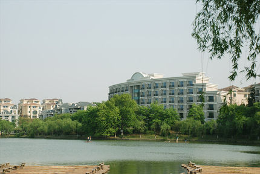

NANJING
|  |
| The Pearl Spring Hotel in Nanjing |
When Nobel Prize winner Robert Mundell visited Nanjing, he suggested the organization of a chess tournament. Six players carried out double rounds at the Pearl Spring Hotel in 2008 for a prize money of 250,000 euro. The final standings became: Topalov 7/10, Aronian 5½, Bu Xiangzhi 5, Svidler 4½, Movsesian and Ivanchuk 4.
The second Pearl Spring event in 2009 became a great success for a young player: Carlsen 8/10, Topalov 5½, Wang Yue 4½, Radjabov, Leko and Jakovenko 4.
Carlsen repeated his success in the third Pearl
Spring tournament. The result became: Carlsen 7/10, Anand 6, Bacrot
5, Gashimov and Topalov 41/2, Wang Yue 3.
pgn-file Pearl
Spring
 |
Go to home page |